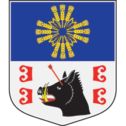

Gradska opština Barajevo
Prigradska opština

Opis grba
Blazon osnovnog grba glasi: „Štit razdeljen, gore u plavom kvadratno ispražnjeni krst čije krake formiraju po tri zlatna žitna klasa, dok u prostoru između krakova po dve lisne vlati međusobno obrazuju inicijal imena Bogorodice, a dole u srebru između četiri crvena ocila, 2 + 2, zlatnom strelom u čelo ranjena odsečena crna glava divljeg vepra, crvenog jezika i oružana zlatno”.
Blazon srednjeg grba glasi: „Osnovni grb nadvišen srebrnom bedemskom krunom sa tri vidljiva merlona. Ispod štita ispisan je naziv mesta i opštine”.
Blazon velikog grba glasi: „Osnovni grb nadvišen srebrnom bedemskom krunom sa tri vidljiva merlona. Držači štita su dva prirodna petla, uz koje stoje u tlo pobodena i zlatom okovana koplja stegova opšivenih zlatnim resama, i to desno Beograda, a levo Titulara. Postament je travom obrastao brežuljkasti predeo sa dve stene na kojima stoje petlovi. Ispod štita ispisan je naziv mesta i opštine”. Opština Barajevo ima kvadratni steg sledećeg blazona: „U plavom kvadratno ispražnjeni krst čije krake formiraju po tri zlatna žitna klasa, dok u prostoru između krakova po dve lisne vlati međusobno obrazuju inicijal imena Bogorodice”.
Opšte informacije
Grb Barajeva izradilo je srpsko heraldičko društvo „Beli orao”, a autor likovnog rešenja je Dragomir Acović. Skupština opštine usvojila je 2004. godine odluku o grbu i stegu opštine i mesta Barajevo.